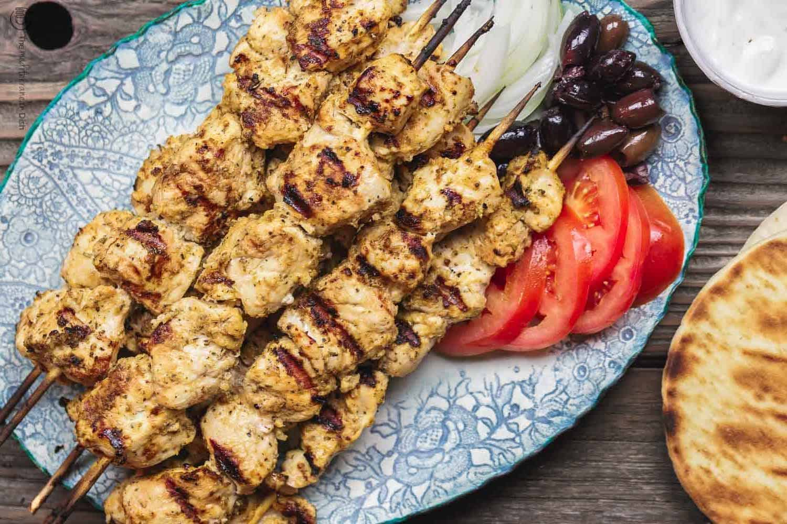
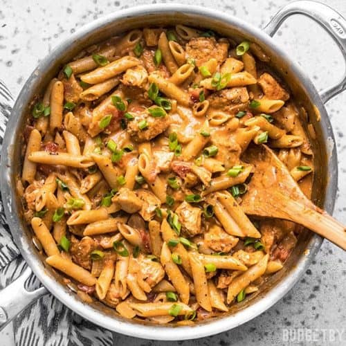

At the time of working on this assignment (part 2)...
It is 2:05 PM on 1/19/2022. I am eating leftover chicken, which I made last night. I quite enjoy cooking.  Not pictured, I would've used a picture of mine but it doesn't really look as good.
My technical interests
I really enjoy programming. It can be fun, finding efficient solutions to problems. When I graduate, I hope to get a job working as a developer in some capacity. When I was younger, my "dream job" was to be a game developer, and I hope to do something along those lines, but probably moreso as a hobby rather than a serious career choice.
Kinda ran out of ideas for new pictures so here's some more food I like the look of.

My card
I don't really have any good pictures of myself on hand so I figured I'd google "programmer" and just use that, and this is the first thing that came up. Ironically, it actually really looks like me. Same hair color and length and glasses. I also have two monitors. Not a fan of coffe though.